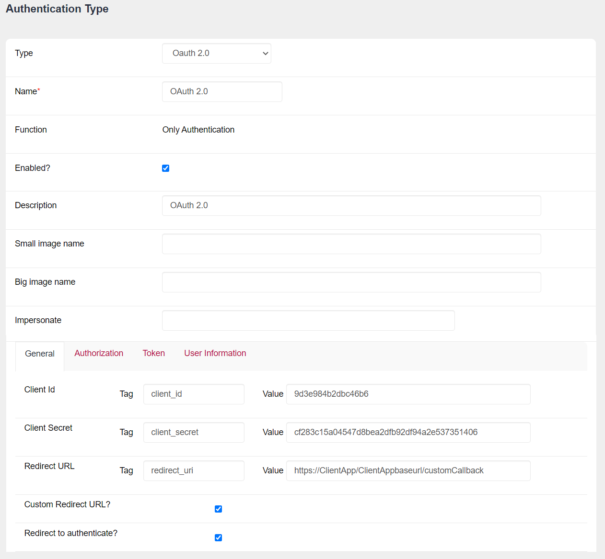
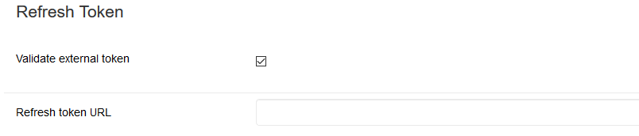

GeneXus Access Manager allows you to authenticate using any OAuth 2.0 provider, just by following these steps.
The definition of this GAM Authentication Type is the same as any other type of authentication already existing in GAM, only that this type of authentication requires detailed configuration of the protocol used by the Provider.
So, to configure the OAuth 2.0 Authentication Type in GAM you need to follow the documentation of the Identity Provider to which you want to connect.
At runtime, the operation is similar to that for Facebook / Google authentication, for example. When you select this type of authentication, the login is redirected to the Identity Provider configured.
The Login is displayed by the Provider; there, users enter their credentials and they are redirected back to the application.
In addition, the scenario of renewing the GAM session when the Access token of the Provider is refreshed is automatically solved. This behavior is optional. Otherwise, the GAM session expires at the same time as the Token provided. See below for more information (1).
Some Providers are as follows:
The configuration of this type of authentication is divided into Tabs.

Basic information identifying the application in OAuth 2.0 (Client ID, Client Secret, and Redirect URL).
The Client ID and Client Secret are obtained from the Identity Provider.
If "Custom Redirect URL?" is selected, GAM will not modify the URL. Therefore, the developer must correctly handle the response received.
Clearing the option "Redirect to authenticate?" allows authentication with OAuth 2.0 using REST without redirection to the Identity Provider.
Here, configure the URL for users to enter their credentials.
Some parameters are needed to call this URL and should be specified in this section. The same happens with the response parameters.
Once the user is authenticated, the Identity Provider returns the Access Code. With the Access Code received, GAM requests the Access Token.
Configure the URL(*) of the service to request the Token; this call is in the background and tries to obtain an Access Token.
The response to this call is configured in the Response section.
Include Authorization header with Basic value: When performing an Oauth 2.0 authentication with a provider, it regularly requests only the Content-Type header to obtain the Token. However, some Oauth 2.0 providers (for example, Oracle Access Management - OAM) requests the Authorization header. This checkbox is for adding the Authorization header in base 64 (ClientId:ClientSecret in base 64).
(1) Optionally, you can select that GAM validates the expiration of the Identity Provider's Access Token. In that case, when the Access token is refreshed, GAM renews the session automatically and the user doesn't need to log in again. This is done through the "Validate ExternalToken" checkbox.
When the Provider returns a Refresh Token, you can configure the URL for this action (Refresh Token URL). If you don't configure a Refresh Token URL, the same URL(*) configured above is used to request a Token.

If the Token is renewed, you can access it using the GAMSession.ExternalToken method. If the Token expires and doesn't refresh, the application logs out the user (the GAM Session ends).
Configure the service URL to obtain the authenticated user's data. This service is essential to be able to complete the application's authentication.
The response is a JSON in which the user's data is obtained.
In some cases, the Provider fields need to be mapped to the GAM fields. For example, Gender Values: a string that maps the user's gender to the GAM conventions.
In GAM, M=male and F=female.
For those attributes that cannot be mapped to any of the fields included in the User Information form, you can add a pair (Attribute Name, Attribute Tag). These attributes will be saved as extended attributes of the GAM user.
For example, the pair (Attribute Name = Amount, Attribute Tag = salaryAmount), means that the tag "salaryAmount" will be extracted from the response of the IDP, and that information will be saved as an extended attribute of the user using the "Amount" ID in the GAM table. This information can be retrieved using the GAM User object extended attribute methods.
General: Client ID: client_id Value: <clientid> Client Secret: client_secret Value: <clientsecret> Redirect URL: redirect_uri Value: https://<server>/webapp Authorization: URL: https://login.windows.net/common/oauth2/authorize Response type TAG: response_type Value: code Scope TAG: scope Value: https://graph.microsoft.com/user.read State TAG: state Include ClientID and RedirectURL Response: Access code TAG: code Error description TAG: message Token: URL: https://login.windows.net/common/oauth2/token Header Cotent type: Content-type Value: application/x-www-form-urlencoded Grant type: grant_type Value: authorization_code Include = All Aditional Parameters: resource=https://graph.microsoft.com Response: Access token TAG: access_token Token type TAG: token_type Expires in TAG: expires_in Error description TAG: message Validate external token = False User Information: URL: https://graph.microsoft.com/v1.0/me Method: Get Header Content type: Content-type Value: application/json;charset=utf-8 Do not include anything Email TAG: mail External ID TAG: id Name TAG: userPrincipalName First name TAG: givenName Last name TAG: surname Language TAG: preferredLanguage Error description TAG: message
General: Client ID: client_id Value: <clientid> Client Secret: client_secret Value: <clientsecret> Redirect URL: redirect_uri Value: https://<server>/webapp Authorization: URL: http://auth.mercadolibre.com/authorization Response type: response_type Value: code Scope: scope Value: read State: state Include ClientID and RedirectURL Response: Access code TAG: code Error description TAG: error_description Token: URL: https://api.mercadolibre.com/oauth/token Header Cotent type: Content-type Value: application/x-www-form-urlencoded Grant type: grant_type Value: authorization_code Include All Response: Access token TAG: access_token Token type TAG: token_type Expires in TAG: expires_in User Id TAG: user_id Refresh Token TAG: refresh_token Error description TAG: error_description Validate external token = True Refresh token URL = leave it empty User Information: URL: https://api.mercadolibre.com/users/me Method: Get Header Content type: Content-type Value: application/json;charset=utf-8 Include Acces Token: access_token Email TAG: email External ID TAG: id Name TAG: nickname First name TAG: first_name Last name TAG: last_name URL profile TAG: permalink Error description TAG: error_description
General: Client ID: client_id Value: <clientid> Client Secret: client_secret Value: <clientsecret> Redirect URL: redirect_uri Value: https://<server>/webapp (ie. https://gamidentityprovider.com/v15_IPServerNetSQL) Authorization: URL: https://api.instagram.com/oauth/authorize Response type: response_type Value: code Scope: scope Value: basic State: state Include ClientID and RedirectURL Response: Access code TAG: code Error description TAG: error_description Token: URL: https://api.instagram.com/oauth/access_token Header Cotent type: Content-type Value: application/x-www-form-urlencoded Grant type: grant_type Value: authorization_code Include All Response: Access token TAG: access_token Token type TAG: token_type Expires in TAG: expires_in Refresh Token TAG: Not available for this Provider. When the token expires, it cannot be refreshed. Error description TAG: error_description Validate external token = True // When the token expires, the GAM session ends. Refresh token URL = leave it empty. Uses the same URL used to ask for a Token. User Information: URL: https://api.instagram.com/v1/users/self Method: Get Header Content type: Content-type Value: application/json;charset=utf-8 Do not include anything. Email TAG: External ID TAG: id Name TAG: username First name TAG: full_name Generate automatic Last name : True Birthday TAG: birthday URL image TAG: profile_picture Error description TAG: error_description
General: Client ID: client_id Value: <clientid> Client Secret: client_secret Value: <clientsecret> Redirect URL: redirect_uri Value: https://<server>/webapp Authorization: URL: https://www.linkedin.com/oauth/v2/authorization Response type: response_type Value: code Scope: scope Value: r_emailaddress+r_basicprofile State: state Include ClientID and RedirectURL Response: Access code TAG: code Error description TAG: error_description Token: URL: https://www.linkedin.com/oauth/v2/accessToken Header Cotent type: Content-type Value: application/x-www-form-urlencoded Grant type: grant_type Value: authorization_code Include All Response: Access token TAG: access_token Expires in TAG: expires_in Refresh Token TAG: Not available for this Provider. When the token expires, it cannot be refreshed. Error description TAG: error_description Validate external token = True // When the token expires, the GAM session ends. Refresh token URL = leave it empty. Uses the same URL used to ask for a Token. User Information: URL: https://api.linkedin.com/v1/people/:(id,email-address,first-name,last-name,headline,picture-url) Method: Get Header Content type: Content-type Value: application/json;charset=utf-8 NOTHING is included Additional parameters: format=json Email TAG: emailAddress External ID TAG: id Name TAG: emailAddress First name TAG: firstName Last name TAG: lastname URL image TAG: pictureUrl Error description TAG: error_description
General: Client ID: client_id Value: <clientid> Client Secret: client_secret Value: <clientsecret> Redirect URL: redirect_uri Value: https://<server>/webapp Authorization: URL: https://accounts.google.com/o/oauth2/auth Response type: response_type Value: code Scope: scope Value: https://www.googleapis.com/auth/userinfo.email+https://www.googleapis.com/auth/userinfo.profile State: state Include ClientID and RedirectURL Additional Parameters for Smart Devices: access_type=offline Response: Access code TAG: code Error description TAG: error_description Token: URL: https://accounts.google.com/o/oauth2/token Header Cotent type: Content-type Value: application/x-www-form-urlencoded Grant type: grant_type Value: authorization_code Include All Aditional Parameters: Response: Access token TAG: access_token Token type TAG: token_type Expires in TAG: expires_in Refresh Token TAG: refresh_token Error description TAG: error_description Validate external token = True Refresh token URL = leave it empty. Uses the same URL used to ask for a Token. User Information: URL: https://www.googleapis.com/oauth2/v1/userinfo Method: Get Header Content type: Content-type Value: application/json;charset=utf-8 Do not include anything. Email TAG: email Verified Email Tag: verified_email External ID TAG: id Name TAG: email First name TAG: given_name Last name TAG: family_name Gender TAG: gender Values: M=male&M=hombre&F=female&F=mujer URL Image TAG: picture URL Profile TAG: link Language TAG: locale Error description TAG: error_description
General: Client ID: client_id Value: <clientid> Client Secret: client_secret Value: <clientsecret> Redirect URL: redirect_uri Value: https://<server>/webapp Authorization: URL: https://graph.facebook.com/v2.12/oauth/authorize Response type: response_type Value: code Scope: scope Value: email+user_birthday State: state Include ClientID and RedirectURL Additional Parameters for Smart Devices: display=touch Response: Access code TAG: code Error description TAG: message Token: URL: https://graph.facebook.com/v2.12/oauth/access_token Header Cotent type: Content-type Value: application/x-www-form-urlencoded Grant type TAG: grant_type Value: authorization_code Include = todo Aditional Parameters: Response: Access token TAG: access_token Token type TAG: token_type Expires in TAG: expires_in Refresh Token TAG: refresh_token Error description TAG: message Validate external token = True Refresh token URL = leave it empty. Uses the same URL used to ask for a Token. User Information: URL: https://graph.facebook.com/me Method: Get Header Content type: Content-type Value: application/json;charset=utf-8 Include Access Token: access_token Additional Parameters: fields=id,email,first_name,last_name,birthday,gender,link,locale,timezone,verified,updated_time,picture Email TAG: email External ID TAG: id Name TAG: id First name TAG: first_name Last name TAG: last_name Gender TAG: gender Values: M=male&M=hombre&F=female&F=mujer Birthday TAG: birthday URL Image TAG: url URL Profile TAG: link Language TAG: locale Time zone TAG: timezone Error description TAG: message
General: Client ID: appid Value: <appid> Client Secret: secret Value: <secret> Redirect URL: redirect_uri Value: https://<server>/webapp Authorization: URL: https://open.weixin.qq.com/connect/qrconnect Response type TAG: response_type Value: code Scope TAG: scope Value: snsapi_login State TAG: state Include ClientID and RedirectURL Additional parameters: Response: Access code TAG: code Error description TAG: errmsg Token: URL: https://api.weixin.qq.com/sns/oauth2/access_token Token Method: POST Header Cotent type: Content-type Value: application/x-www-form-urlencoded Grant type: grant_type Value: authorization_code Include Access Code: True Include Client Id: True Include Client Secret: True Include Redirect URL: True Response: Access token TAG: access_token Token type TAG: Expires in TAG: expires_in Scope Tag: scope User Id Tag: openid Refresh token Tag: refresh_token Error Description Tag: errmsg Refresh Token: Validate external token: True Refresh token URL: https://api.wechat.com/sns/oauth2/refresh_token User Information: URL: https://api.weixin.qq.com/sns/userinfo Method: Post Header Content type: Content-type Value: application/json;charset=utf-8 Include Access Token: True Tag: access_token Include Client Id: False Include Client Secret: False Include User Id: True Additional Parameters: lang=en # Other options are zh_CN for Simplified Chinese, zh_TW for Traditional Chinese Response User Email Tag: unionid User External Id Tag: unionid User Name Tag: unionid User First Name: nickname Generate automatic Last Name: True User Language Tag: language Error Description Tag: errmsg
As of GeneXus 15 upgrade 11.
HowTo: Use GAM as an Oauth 2.0 provider
Office 365 Authentication using GAM
HowTo: Authenticate to Azure Active Directory using GAM
ExternalId property of GAMUser object
| Backlinks | |
| GAM Authentication Types | |
| GAM Oauth 2.0 Authentication Type (GeneXus 17 upgrade 4 or prior) | Toc:GeneXus Access Manager (GAM) |
| Office 365 Authentication using GAM |